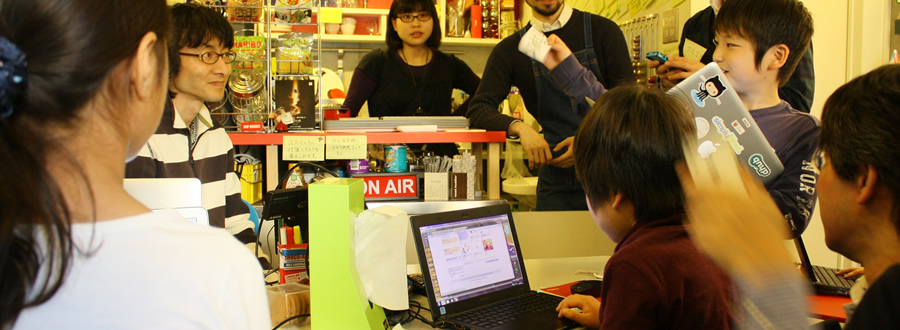

CoderDojo, an open source programming club for kids

CoderDojo Tokyo opens every Sunday at Shimokitazawa OpenSource Cafe. We are teaching kids how to:
To participate in CoderDojo Tokyo events, click "Join" on the following pages.
Mentors of CoderDojo Tokyo are software/hardware engineers, designers, and educators. Some are regular vistors of OpenSource Cafe :-)
This webpage is also open source. We welcome your pull requests!